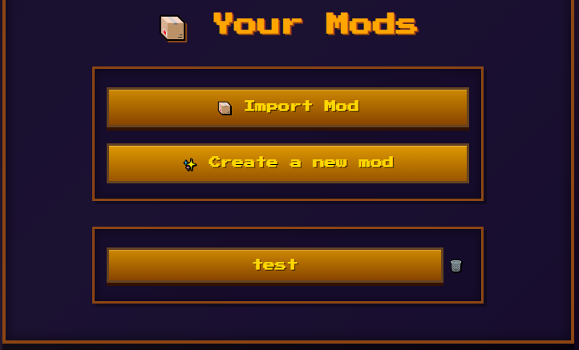
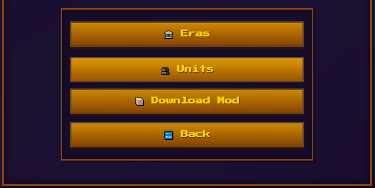
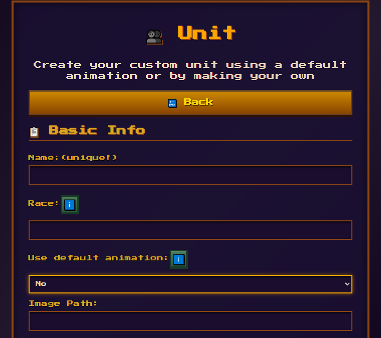
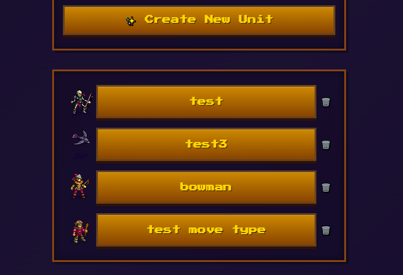
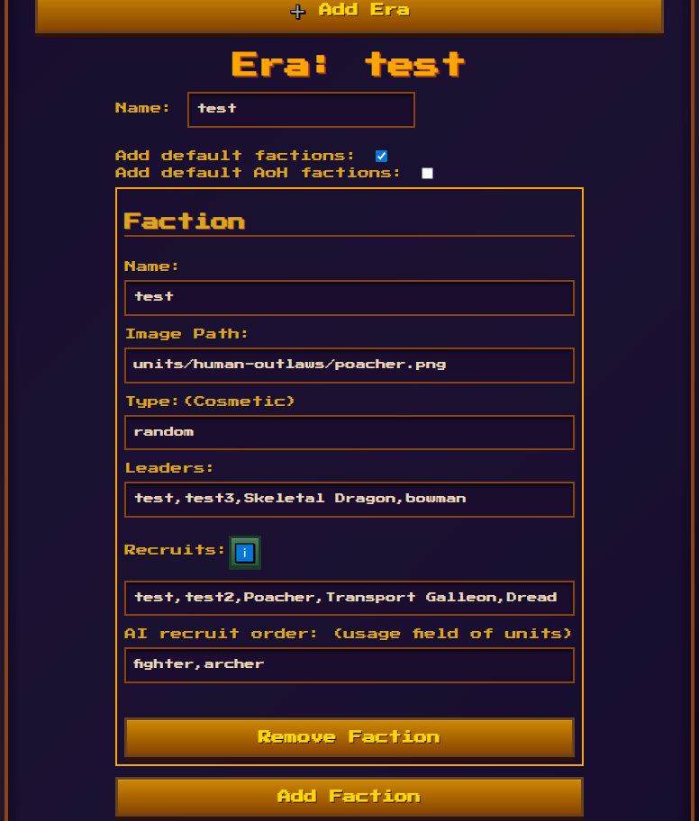

How to quickly make your mod
A quick guide on how to use mod wesnoth using this sites tool without touching any code
Lets start by clicking the "Create a new mod" button and givint it a unique name
Start by making a unit
The easiest way to make a unit is to use the game's original animations; this will automatically give it the images and animations of the unit of your choosing.
Most complex fields will have an info button that will show you the different default options for that field
You can also try adding your custom animations by using the following tools:
- Segmented sprites to make you own with these packs: FrankenPacks
- Any img or pixel art editing software. Recomendation: PISKEL
- Have all your animations in separate folder from 1 to the number of sprites and add the path to the image of your animation like so:
- "imgs/units/filename-[1~8].png:[150*3,200,150*4]"
- [1~8] is the amount of frames it will go through and :[the time in ms spend on each frame]
The custom animation tool is still a work in progress feel free to to make your own improvements if you feel up to it
Once done you unit will display in the units page and can be edited
Adding your units to an Era
Once you have your custom units made you will need to add them to a Faction within an Era to be able to play them
In you mod main page click the Eras button which will bring you to the following page:
Here you can select to have the default game factions added to your Era (recomended if you only make 1 or 2 factions), you can choose to add the Age of Heros version which are level 3 leaders
The type and image field can be ignored since they are cosmetic, for the leaders and recruits input their names separeted by comas has shown, and AI usage order lets you choose the types of untis the AI will use if using this faction
Different eras can be made to make your own game modes with higher level leaders or what ever you come up with
Usefull links while modding
Get Started